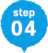

- ❶イベントボランティアを
希望の場合 - 当センター登録の個人ボランティアへのメール案内、センター内掲示板、かわら版、ホームページ等での告知を行います。
ボランティアに関する問合せ先や申込先は原則、募集団体宛てとさせていただきます。
- ❷継続型ボランティアを
希望の場合 - かわら版にて告知を行います。（毎月１日発行。個人ボランティアへメール送信をしています）
※活動申込みができるのは原則、当センターおよび市社会福祉協議会に登録のある個人ボランティアに限定しています。問合せ・連絡先は当センターとし、職員が仲介してお繋ぎいたします。
- ❸芸能団体の出演依頼
- センターの所有する“ステージボランティア”情報の中から出演希望団体を選定いただき、職員が団体へお繋ぎいたします。
※即日対応できない場合がございますのでご了承ください。
※団体によっては１ヶ月前、２ヶ月前でないと対応できない団体もございます。早めのお申込をおすすめいたします。
ボランティア募集の際の注意点
- 公益活動に関するボランティア募集を受け付けます。
- 労働と判断される内容に関してはお断りする場合がございます。（※駐車場の警備、物販の販売員など）
- 営業活動や宗教等に関する勧誘は禁止します。
- ボランティアのプライバシーは厳守してください。取得した個人名・連絡先等の情報漏洩にはご注意ください。
- ボランティアのプライベートを尊重してください。過度なボランティアの押し付け、スケジュールの詰め込みなど無いようご配慮をお願いします。
ボランティアを募集される皆様へおねがい
ボランティアは雇用関係にないとはいえ、責任や自主性を尊重しなければなりません。互いに思いやり、より良い関係のもと活動を行いましょう。
また、無償の奉仕活動がボランティアの定義とされていますが、「交通費」「お弁当」などを支給することで活動の継続性や満足度の向上にもつながります。強制ではありませんが、必要経費の実費支給（現物支給）を推奨します。